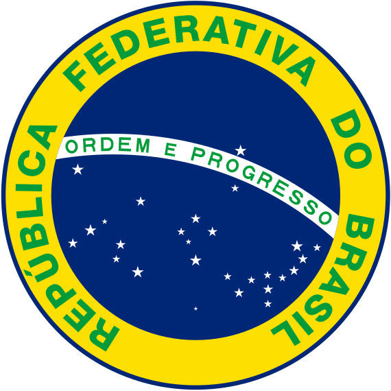

A bandeira nacional foi Instituída no dia 19 de novembro de 1889. Ela é composta de um retângulo verde, um losango amarelo sobreposto e um círculo azul com estrelas brancas, do qual está atravessada uma faixa branca com o lema nacional positivista: “Ordem e Progresso”.

As Armas Nacionais, ou o Brasão da República, foi criado pelo engenheiro Artur Zauer no governo do Marechal Deodoro da Fonseca. É uma figura usada nos prédios públicos. Seu uso é obrigatório pelas Forças Armadas e os três poderes: Executivo, Legislativo e Judiciário.O Brasão é representado por um escudo redondo azul celeste, o qual está apoiado numa estrela de cinco pontas. No centro, tem a constelação Cruzeiro do Sul que está sobre uma espada.
Criado no governo de Marechal Deodoro da Fonseca, o selo nacional é usado em documentos oficias (cartas, diplomas, certificados, etc.) com o intuito de autenticar atos do governo. Ele é representado por uma esfera com as estrelas da bandeira que indicam as 27 unidades federativas do país. Possui a inscrição "República Federativa do Brasil" e no meio uma faixa branca com o lema nacional: "Ordem e Progresso".

O território brasileiro possui dimensão continental, sendo o quinto maior país do mundo, superado somente pela Rússia, Canadá, China e Estados Unidos. Os pontos extremos de norte (Monte Caburaí) a sul (Arroio Chuí) do território somam 4.394 km e de leste (Ponta do Seixas) a oeste (Serra Contamana) somam 4.319 km. O Brasil possui uma área de 8 514 876 km², na qual vivem cerca de 190.755.799 habitantes, sendo o quinto país mais populoso do mundo, superado somente pela China (1,3 bilhão), Índia (1,1 bilhão), Estado Unidos (314,6 milhões) e Indonésia (230 milhões). Apesar de ser considerado um país populoso, é pouco povoado. Em razão da dimensão territorial, existem no país três fusos horários em vigor. O território do país é contínuo, exceto algumas ilhas que estão desligadas da parte continental. Grande parte do território brasileiro encontra-se no hemisfério sul (93%), além de estar totalmente na parte ocidental do mundo, em plena zona intertropical da Terra. A localização geográfica no globo faz com que haja uma grande incidência de raios solares sobre a superfície do país, por isso o clima predominante é o tropical, porém existem outras características climáticas, como o equatorial, o subtropical e o semiárido. O país apresenta diversas formações vegetativas das quais podemos citar: Cerrado, Caatinga, Floresta Atlântica, Mata de Araucária, Pradarias, Pantanal, Floresta Amazônica. Quanto aos recursos hídricos, o território é privilegiado, pois existe uma grande quantidade de rios, as principais bacias hidrográficas são: Bacia Amazônica, Bacia do São Francisco, Bacia do rio Paraná, Bacia do rio Paraguai e Bacia do rio Uruguai. O Brasil é uma Federação constituída por 26 Estados e o Distrito Federal, sendo os Estados divididos em municípios e esses, em distritos. A população brasileira é constituída etnicamente a partir de índios, portugueses, africanos, europeus imigrantes (italianos, poloneses, alemães, espanhóis, etc.) e asiáticos (libaneses, japoneses, entre outros). Atualmente a população é composta segundo cor/raça: brancos (49,4%), pardos (42,3%), negros (7,4%), amarelos (0,5%) e indígenas (0,3%). A economia brasileira cresceu de forma significativa, hoje o país é considerado emergente, além de ser grande produtor agrícola e ao mesmo tempo industrializado, com um parque industrial diversificado. Diversas estimativas colocam o país como potências para o futuro, tendo em vista o grande potencial que possui.